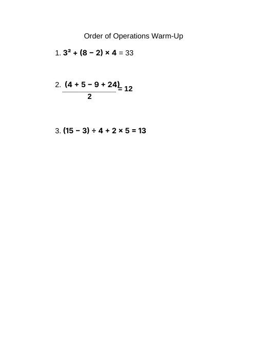

Grace Dittman
Block 2 Math
Block 3 Math
ESS
Lesson Plans
Résumé
Photos
Search
Home
›
Block 3 Math
›
Week 3
›
Activities
›
Order of Operations Warm-Up
Order of Operations Warm-Up
Order of Operations Warm-Up.docx
← Order of Operations Warm-Up (Answer Key)
Evaluating Expressions Answer Key →
1 page
Open PDF
Goes with

Order of Operations Warm-Up (Answer Key)
Order of Operations Warm-Up Key.docx
Lesson plans from the same week
Factors, Perfect Squares & Simplifying Radicals
09/14, 09/15
Ordering Numbers, Absolute Value & Order of Operations
09/16, 09/17
Evaluating Expressions with Substitution
09/18, 09/22
← Order of Operations Warm-Up (Answer Key)
Evaluating Expressions Answer Key →